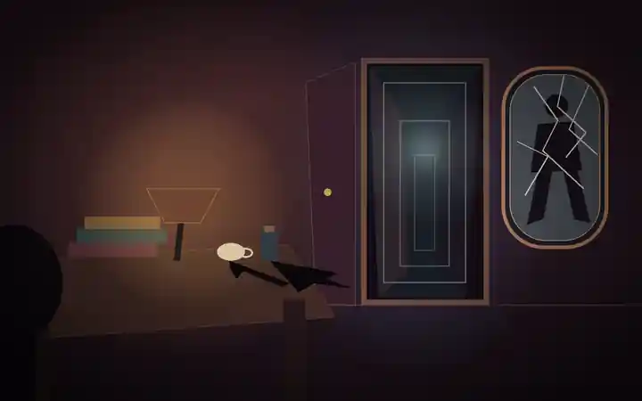

Filosofia contemporanea · La crisi del soggetto
L’io non è padrone
in casa propria.
Se una parte decisiva della nostra vita psichica agisce senza diventare cosciente, che cosa resta della libertà, della responsabilità e della conoscenza di noi stessi?
Tocca i tre punti luminosi
Quattro ingressi
Non imparare una lista di termini: osserva come Freud costruisce un modello per spiegare ciò che la coscienza non riesce a rendere trasparente.
Scopro
Separa ciò che vediamo, ciò che diciamo di noi stessi e ciò che un’interpretazione aggiunge.
PercorsoStudio
Dodici tappe a due livelli, dalla neurologia viennese al disagio della civiltà.
Opere e problemiApprofondisco
Testi, contesti, revisioni e controversie restano distinti e documentati.
Biografia visualeA fumetti
Otto scene documentate, da Vienna e Parigi fino all’esilio londinese.
Scopro · Prima osserva, poi interpreta
Quanto sappiamo davvero delle ragioni di un’azione?
Le situazioni sono inventate e non cliniche. Non producono diagnosi né punteggi: allenano a distinguere comportamento osservabile, spiegazione dichiarata, ipotesi interpretativa ed elementi che resistono alla spiegazione.
Studio · Dodici tappe
Dalla coscienza come centro al soggetto attraversato dal conflitto
Una narrazione chiara, esempi fittizi e concetti essenziali per entrare nel problema.
Il progresso resta sul dispositivo. Segna il filo del percorso, non misura la persona che studia.
Laboratorio · Interpretare senza diagnosticare
Tre modelli sotto pressione
Qui si applicano e si criticano modelli freudiani su materiali inventati. Nessun esercizio pretende di scoprire il significato “vero” di sogni, sintomi o comportamenti reali.
Approfondisco · Opere e problemi
Che cosa scrive Freud, quando lo scrive, dove il modello cambia
Ogni scheda indica statuto editoriale, problema, tesi e limite. Le ricostruzioni storiche e le valutazioni contemporanee non vengono fatte passare per parole di Freud.
A fumetti · Otto scene documentate
Una biografia che orienta senza spiegare tutto
Gli eventi biografici danno un contesto alle idee, ma non vengono usati come scorciatoia psicologica per “dedurre” automaticamente una teoria.
Mappe concettuali · 5 percorsi
Segui conflitti, trasformazioni e revisioni
Strumenti
Ritrova, confronta, verifica
La domanda che resta
Se non siamo pienamente trasparenti a noi stessi, la libertà scompare oppure diventa un compito più difficile?
Freud rende sospetta l’idea di un io sovrano che conosce immediatamente le proprie ragioni. Ma un modello interpretativo potente non diventa vero solo perché riesce a raccontare tutto. Il lascito più fertile sta forse proprio nella doppia esigenza che apre: prendere sul serio ciò che sfugge alla coscienza e, nello stesso tempo, chiedere a ogni interpretazione quali prove potrebbero correggerla.